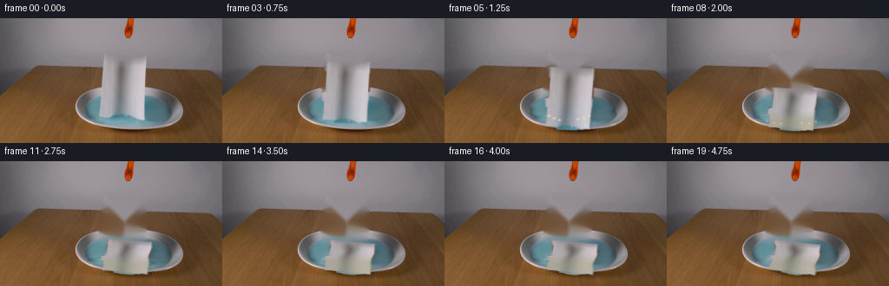
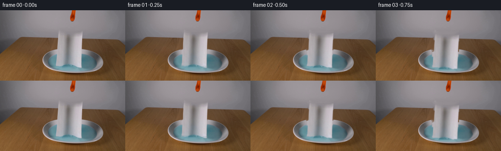
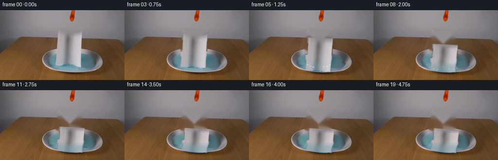
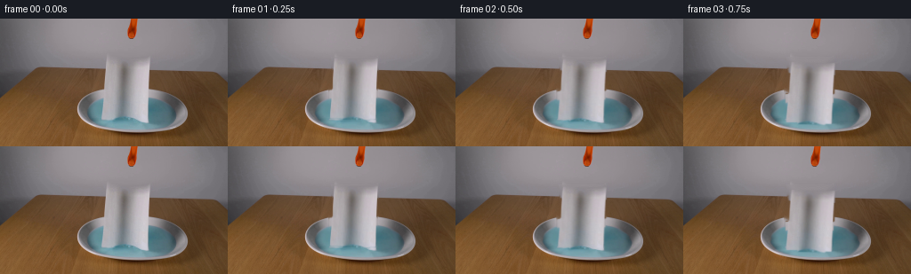

CODING AGENTS AS PIXEL WORLD MODELS
traex/DeepSeek-V4.1-Flash · 0128
点击播放 · 原生 RGB 像素
逐轮保存的候选
回放视频、检查图与代码变化。
每份候选均可单独播放。实际图片检查记录在下方工具轨迹中。
候选 01播放与检查图
点击播放 · 原生 RGB 像素

展开代码变化
--- 上一保存版本
+++ 本次保存版本
@@ -0,0 +1,330 @@
+from pathlib import Path
+
+import cv2
+import numpy as np
+
+import artifact_io
+
+
+CASE_DIR = Path(__file__).resolve().parent
+WIDTH = 256
+HEIGHT = 144
+FRAMES = 20
+FPS = 4
+
+
+def towel_outline() -> np.ndarray:
+ """Approximate the two hanging towel lobes and their center fold."""
+ mask = np.zeros((HEIGHT, WIDTH), dtype=np.uint8)
+ rows = (
+ (44, 55, 117, 168),
+ (56, 78, 118, 168),
+ (79, 90, 114, 167),
+ (91, 107, 116, 167),
+ (108, 111, 115, 166),
+ (112, 115, 128, 166),
+ (116, 118, 151, 166),
+ )
+ for y0, y1, x0, x1 in rows:
+ mask[y0 : y1 + 1, x0 : x1 + 1] = 255
+
+ # The lower edge of the towel is softly scalloped where it hangs.
+ yy, xx = np.mgrid[:HEIGHT, :WIDTH]
+ lower_edge = 118 - 0.13 * np.clip(xx - 128, 0, None)
+ mask[(yy >= 108) & (yy > lower_edge)] = 0
+
+ # Leave a narrow central fold in the source layer.
+ for y in range(44, 112):
+ width = 2 if y < 82 else 3
+ mask[y, 139 - width : 143 + width] = 255
+
+ mask = cv2.morphologyEx(mask, cv2.MORPH_CLOSE, np.ones((3, 3), np.uint8))
+ return mask
+
+
+def make_plate(frame: np.ndarray, towel_mask: np.ndarray) -> np.ndarray:
+ """Remove the hanging towel and reconstruct the brown wall, dish, and liquid."""
+ remove = cv2.dilate(towel_mask, np.ones((3, 3), np.uint8), iterations=1)
+ plate = cv2.inpaint(frame, remove, 5, cv2.INPAINT_TELEA)
+
+ # Inpaint can leave paper-colored streaks at the water boundary. Pull those
+ # pixels toward a smooth interpolation of the liquid on either side.
+ hsv = cv2.cvtColor(plate, cv2.COLOR_BGR2HSV)
+ blue = (
+ (hsv[:, :, 0] >= 78)
+ & (hsv[:, :, 0] <= 118)
+ & (hsv[:, :, 1] >= 22)
+ & (hsv[:, :, 2] >= 48)
+ )
+ yy, xx = np.mgrid[:HEIGHT, :WIDTH]
+ water_box = (yy >= 88) & (yy <= 126) & (xx >= 96) & (xx <= 200)
+ blue &= water_box
+ blue = cv2.morphologyEx(blue.astype(np.uint8), cv2.MORPH_CLOSE, np.ones((5, 5), np.uint8))
+
+ # Smooth the exposed center with a wide median while retaining the original
+ # highlights at the liquid's left and right edges.
+ smooth = cv2.medianBlur(plate, 9)
+ center_region = (
+ water_box
+ & (xx >= 112)
+ & (xx <= 174)
+ & (yy >= 86)
+ & (yy <= 124)
+ & (remove > 0)
+ )
+ blend = cv2.GaussianBlur(center_region.astype(np.float32), (0, 0), 1.2)
+ blend = np.clip(blend * 0.78, 0.0, 0.78)[..., None]
+ plate = (plate.astype(np.float32) * (1.0 - blend) + smooth.astype(np.float32) * blend).astype(np.uint8)
+ return plate
+
+
+def water_mask(plate: np.ndarray) -> np.ndarray:
+ hsv = cv2.cvtColor(plate, cv2.COLOR_BGR2HSV)
+ yy, xx = np.mgrid[:HEIGHT, :WIDTH]
+ mask = (
+ (hsv[:, :, 0] >= 78)
+ & (hsv[:, :, 0] <= 118)
+ & (hsv[:, :, 1] >= 18)
+ & (hsv[:, :, 2] >= 42)
+ & (yy >= 86)
+ & (yy <= 126)
+ & (xx >= 94)
+ & (xx <= 202)
+ ).astype(np.uint8)
+ mask = cv2.morphologyEx(mask, cv2.MORPH_CLOSE, np.ones((5, 5), np.uint8))
+ mask = cv2.dilate(mask, np.ones((3, 3), np.uint8), iterations=1)
+ return cv2.GaussianBlur(mask * 255, (0, 0), 0.8)
+
+
+def animate_water(plate: np.ndarray, mask: np.ndarray, frame_index: int) -> np.ndarray:
+ if frame_index == 0:
+ return plate.copy()
+
+ yy, xx = np.mgrid[:HEIGHT, :WIDTH].astype(np.float32)
+ strength = mask.astype(np.float32) / 255.0
+ if frame_index < 4:
+ amplitude = 0.20 + 0.08 * frame_index
+ elif frame_index < 10:
+ amplitude = 0.80 * np.exp(-(frame_index - 4) / 4.0) + 0.20
+ else:
+ amplitude = 0.16
+
+ phase = 0.72 * frame_index
+ ripple = np.sin(0.72 * yy - phase) + 0.45 * np.sin(1.65 * yy + 0.44 * xx + 0.55 * phase)
+ lateral = np.cos(0.63 * yy + 0.09 * xx - 0.85 * phase)
+ map_x = (xx + strength * amplitude * lateral).astype(np.float32)
+ map_y = (yy + strength * amplitude * 0.55 * ripple).astype(np.float32)
+ return cv2.remap(
+ plate,
+ map_x,
+ map_y,
+ interpolation=cv2.INTER_LINEAR,
+ borderMode=cv2.BORDER_REFLECT_101,
+ )
+
+
+def motion_values(frame_index: int) -> tuple[float, float, float, float]:
+ """Return drop, vertical scale, rotation degrees, and crumple amount."""
+ if frame_index <= 1:
+ return (0.0 if frame_index == 0 else 0.45), 1.0, 0.0, 0.0
+ if frame_index == 2:
+ return 2.0, 1.0, 0.5, 0.0
+ if frame_index == 3:
+ return 5.4, 1.0, 1.0, 0.02
+ if frame_index == 4:
+ return 9.2, 1.0, 1.6, 0.05
+ if frame_index == 5:
+ return 13.0, 1.0, 2.1, 0.08
+
+ # The lower edge has landed; the upper part continues to settle.
+ top_drop = (16, 20, 24, 28, 31, 34, 36, 38, 40, 41.5, 42.5, 43.0, 43.3, 43.5)
+ drop = top_drop[min(frame_index - 6, len(top_drop) - 1)]
+ height = 74.0
+ scale_y = max(0.52, 1.0 - drop / height)
+ angle = 2.1 + min(4.6, 0.34 * (frame_index - 5))
+ crumple = min(1.0, 0.08 + 0.085 * (frame_index - 5))
+ return drop, scale_y, angle, crumple
+
+
+def transform_towel(
+ towel_bgr: np.ndarray,
+ towel_alpha: np.ndarray,
+ frame_index: int,
+) -> tuple[np.ndarray, np.ndarray]:
+ drop, scale_y, angle_deg, crumple = motion_values(frame_index)
+ src_anchor = (142.0, 118.0)
+ dst_anchor = (142.0 + 0.08 * drop, 118.0 + min(drop, 13.0))
+
+ theta = np.deg2rad(angle_deg)
+ cos_a, sin_a = np.cos(theta), np.sin(theta)
+ scale_x = 1.0 + 0.022 * crumple
+
+ # Forward source-to-destination affine transform, anchored at the towel's
+ # lower center so that compression lifts the loose upper edge.
+ a = np.array(
+ [
+ [cos_a * scale_x, -sin_a * scale_y, 0.0],
+ [sin_a * scale_x, cos_a * scale_y, 0.0],
+ [0.0, 0.0, 1.0],
+ ],
+ dtype=np.float64,
+ )
+ src_t = np.array(
+ [[1.0, 0.0, -src_anchor[0]], [0.0, 1.0, -src_anchor[1]], [0.0, 0.0, 1.0]]
+ )
+ dst_t = np.array(
+ [[1.0, 0.0, dst_anchor[0]], [0.0, 1.0, dst_anchor[1]], [0.0, 0.0, 1.0]]
+ )
+ matrix = (dst_t @ a @ src_t)[:2]
+
+ warped = cv2.warpAffine(
+ towel_bgr,
+ matrix,
+ (WIDTH, HEIGHT),
+ flags=cv2.INTER_LINEAR,
+ borderMode=cv2.BORDER_CONSTANT,
+ borderValue=(0, 0, 0),
+ )
+ alpha = cv2.warpAffine(
+ towel_alpha,
+ matrix,
+ (WIDTH, HEIGHT),
+ flags=cv2.INTER_LINEAR,
+ borderMode=cv2.BORDER_CONSTANT,
+ borderValue=0,
+ )
+
+ if crumple > 0.01:
+ yy, xx = np.mgrid[:HEIGHT, :WIDTH].astype(np.float32)
+ local_y = np.clip((yy - (44.0 + drop)) / max(1.0, 74.0 * scale_y), 0.0, 1.0)
+ lateral = crumple * (
+ 1.4 * np.sin(local_y * 8.5 + 0.6)
+ + 0.65 * np.sin(local_y * 17.0 + 0.15 * xx)
+ )
+ map_x = xx + lateral
+ map_y = yy + crumple * 0.8 * np.sin((xx - 118.0) * 0.17) * local_y
+ warped = cv2.remap(
+ warped, map_x, map_y, cv2.INTER_LINEAR, borderMode=cv2.BORDER_CONSTANT, borderValue=0
+ )
+ alpha = cv2.remap(
+ alpha, map_x, map_y, cv2.INTER_LINEAR, borderMode=cv2.BORDER_CONSTANT, borderValue=0
+ )
+
+ if frame_index >= 8:
+ # Wet contact darkens the lower portion and cools its color slightly.
+ wet = np.clip((yy - 106.0) / 20.0, 0.0, 0.55)[..., None]
+ water_tone = np.array([128.0, 158.0, 166.0], dtype=np.float32)
+ warped = (
+ warped.astype(np.float32) * (1.0 - wet)
+ + water_tone[None, None, :] * wet
+ ).astype(np.uint8)
+
+ return warped, alpha
+
+
+def draw_ripples(canvas: np.ndarray, frame_index: int) -> None:
+ if frame_index < 4 or frame_index > 12:
+ return
+
+ age = frame_index - 4
+ fade = max(0.0, 0.42 - 0.045 * age)
+ if fade <= 0:
+ return
+
+ overlay = canvas.copy()
+ for cx, cy, delay in ((124, 113, 0), (160, 117, 1)):
+ local_age = age - delay
+ if local_age < 0:
+ continue
+ radius_x = int(4 + 3.2 * local_age)
+ radius_y = max(1, int(1.2 + 0.65 * local_age))
+ color = (183, 213, 220)
+ cv2.ellipse(
+ overlay,
+ (cx, cy),
+ (radius_x, radius_y),
+ 0,
+ 8,
+ 352,
+ color,
+ 1,
+ cv2.LINE_AA,
+ )
+ cv2.addWeighted(overlay, fade, canvas, 1.0 - fade, 0, dst=canvas)
+
+
+def draw_droplets(canvas: np.ndarray, frame_index: int) -> None:
+ if frame_index < 5 or frame_index > 9:
+ return
+
+ age = frame_index - 5
+ starts = (
+ (120, 112, -1.7, -2.5),
+ (126, 115, -1.1, -3.1),
+ (132, 117, -0.45, -3.5),
+ (153, 116, 0.6, -3.2),
+ (160, 115, 1.35, -2.8),
+ (166, 112, 1.9, -2.2),
+ )
+ overlay = canvas.copy()
+ for x0, y0, vx, vy in starts:
+ t = age * 0.9
+ x = int(round(x0 + vx * t))
+ y = int(round(y0 + vy * t + 1.8 * t * t))
+ if 0 <= x < WIDTH and 0 <= y < HEIGHT:
+ cv2.circle(overlay, (x, y), 1, (204, 226, 230), -1, cv2.LINE_AA)
+ alpha = max(0.22, 0.64 - 0.12 * age)
+ cv2.addWeighted(overlay, alpha, canvas, 1.0 - alpha, 0, dst=canvas)
+
+
+def build_frames(frame: np.ndarray) -> np.ndarray:
+ frame_rgb = frame[:, :, ::-1].copy()
+ towel_mask = towel_outline()
+ plate = make_plate(frame, towel_mask)
+ liquid_mask = water_mask(plate)
+
+ alpha = towel_mask.astype(np.float32) / 255.0
+ alpha = cv2.GaussianBlur(alpha, (0, 0), 0.65)
+ alpha = np.clip((alpha - 0.06) / 0.88, 0.0, 1.0)
+ towel_bgr = frame.copy()
+
+ frames = np.empty((FRAMES, HEIGHT, WIDTH, 3), dtype=np.uint8)
+ frames[0] = frame_rgb
+
+ for index in range(1, FRAMES):
+ canvas = animate_water(plate, liquid_mask, index)
+ draw_ripples(canvas, index)
+
+ warped, warped_alpha = transform_towel(towel_bgr, alpha, index)
+
+ # A soft contact shadow helps the sheet sit in the dish after landing.
+ if index >= 4:
+ shadow = cv2.GaussianBlur(warped_alpha, (0, 0), 4.5)
+ shadow = np.roll(shadow, (3, 2), axis=(0, 1))
+ shade = 1.0 - 0.18 * shadow[..., None]
+ canvas = np.clip(canvas.astype(np.float32) * shade, 0, 255).astype(np.uint8)
+
+ a = warped_alpha[..., None]
+ canvas = (
+ warped.astype(np.float32) * a
+ + canvas.astype(np.float32) * (1.0 - a)
+ ).astype(np.uint8)
+ draw_droplets(canvas, index)
+ frames[index] = cv2.cvtColor(canvas, cv2.COLOR_BGR2RGB)
+
+ return frames
+
+
+def main() -> None:
+ frame = cv2.imread(str(CASE_DIR / "first_frame.png"), cv2.IMREAD_COLOR)
+ if frame is None or frame.shape != (HEIGHT, WIDTH, 3):
+ raise RuntimeError("first_frame.png must be a 256x144 RGB image")
+ frames = build_frames(frame)
+ assert frames.shape == (FRAMES, HEIGHT, WIDTH, 3)
+ assert frames.dtype == np.uint8
+ assert np.array_equal(frames[0], frame[:, :, ::-1])
+ artifact_io.save(frames, CASE_DIR)
+
+
+if __name__ == "__main__":
+ main()
候选 02播放与检查图
点击播放 · 原生 RGB 像素

展开代码变化
--- 上一保存版本
+++ 本次保存版本
@@ -137,12 +137,12 @@
return 13.0, 1.0, 2.1, 0.08
# The lower edge has landed; the upper part continues to settle.
- top_drop = (16, 20, 24, 28, 31, 34, 36, 38, 40, 41.5, 42.5, 43.0, 43.3, 43.5)
+ top_drop = (13, 17, 21, 24.5, 27.5, 30, 32, 33.5, 34.5, 35.2, 35.6, 35.9, 36.0, 36.0)
drop = top_drop[min(frame_index - 6, len(top_drop) - 1)]
height = 74.0
- scale_y = max(0.52, 1.0 - drop / height)
- angle = 2.1 + min(4.6, 0.34 * (frame_index - 5))
- crumple = min(1.0, 0.08 + 0.085 * (frame_index - 5))
+ scale_y = max(0.68, 1.0 - 0.64 * drop / height)
+ angle = 2.1 + min(3.2, 0.22 * (frame_index - 5))
+ crumple = min(0.62, 0.05 + 0.048 * (frame_index - 5))
return drop, scale_y, angle, crumple
候选 03播放与检查图
点击播放 · 原生 RGB 像素


展开代码变化
--- 上一保存版本
+++ 本次保存版本
@@ -213,7 +213,7 @@
if frame_index >= 8:
# Wet contact darkens the lower portion and cools its color slightly.
wet = np.clip((yy - 106.0) / 20.0, 0.0, 0.55)[..., None]
- water_tone = np.array([128.0, 158.0, 166.0], dtype=np.float32)
+ water_tone = np.array([168.0, 158.0, 126.0], dtype=np.float32)
warped = (
warped.astype(np.float32) * (1.0 - wet)
+ water_tone[None, None, :] * wet
候选 04播放与检查图
候选 05播放与检查图
点击播放 · 原生 RGB 像素


展开代码变化
--- 上一保存版本
+++ 本次保存版本
@@ -20,17 +20,17 @@
(44, 55, 117, 168),
(56, 78, 118, 168),
(79, 90, 114, 167),
- (91, 107, 116, 167),
+ (91, 107, 115, 167),
(108, 111, 115, 166),
- (112, 115, 128, 166),
- (116, 118, 151, 166),
+ (112, 113, 128, 166),
+ (114, 116, 151, 166),
)
for y0, y1, x0, x1 in rows:
mask[y0 : y1 + 1, x0 : x1 + 1] = 255
# The lower edge of the towel is softly scalloped where it hangs.
yy, xx = np.mgrid[:HEIGHT, :WIDTH]
- lower_edge = 118 - 0.13 * np.clip(xx - 128, 0, None)
+ lower_edge = 117 - 0.13 * np.clip(xx - 128, 0, None)
mask[(yy >= 108) & (yy > lower_edge)] = 0
# Leave a narrow central fold in the source layer.
可观测工具轨迹
实际执行的命令与返回图片。
命令 1exit 0
/bin/bash -c "pwd && rg --files -g '"'!*__pycache__*'"'"
命令 2exit 0
/bin/bash -c "sed -n '1,240p' prompt.txt"
命令 3exit 0
/bin/bash -c "sed -n '1,280p' GENERATION_RULES.md"
命令 4exit 0
/bin/bash -c 'file first_frame.png && identify first_frame.png 2>/dev/null || true && git status --short'
命令 5exit 0
/bin/bash -c "sed -n '1,260p' artifact_io.py"
命令 6exit 0
/bin/bash -c "sed -n '1,280p' player_template.html"
命令 7exit 0
/bin/bash -c "python - <<'PY'
from PIL import Image
import numpy as np
im=Image.open('first_frame.png')
print('mode,size', im.mode, im.size)
a=np.asarray(im.convert('RGB'))
print('shape',a.shape,'dtype',a.dtype,'minmax',a.min(axis=(0,1)),a.max(axis=(0,1)))
print('corners', a[0,0],a[0,-1],a[-1,0],a[-1,-1])
# common colors quantized 16
q=(a//16)*16
colors,counts=np.unique(q.reshape(-1,3),axis=0,return_counts=True)
for i in np.argsort(counts)[-30:][::-1]: print(colors[i], counts[i])
PY"命令 8exit 0
/bin/bash -c "python - <<'PY'
try:
import cv2; print('cv2',cv2.__version__)
except Exception as e: print('no cv2',e)
try:
import scipy; print('scipy',scipy.__version__)
except Exception as e: print('no scipy',e)
PY"命令 9exit 0
/bin/bash -c "python - <<'PY'
import cv2,numpy as np
im=cv2.imread('first_frame.png')[:,:,::-1]
hsv=cv2.cvtColor(im,cv2.COLOR_RGB2HSV)
# kmeans in Lab
lab=cv2.cvtColor(im,cv2.COLOR_RGB2LAB)
data=lab.reshape(-1,3).astype(np.float32)
crit=(cv2.TERM_CRITERIA_EPS+cv2.TERM_CRITERIA_MAX_ITER,100,.2)
_,lbl,cen=cv2.kmeans(data,14,None,crit,10,cv2.KMEANS_PP_CENTERS)
lbl=lbl.reshape(144,256)
# map centers back to mean RGB and bbox
for k in range(14):
m=lbl==k; ys,xs=np.where(m); rgb=im[m].mean(0); hh=hsv[m]
print(k,'n',m.sum(),'rgb',rgb.round().astype(int),'hsv',np.median(hh,axis=0).round().astype(int),'bbox',xs.min(),ys.min(),xs.max(),ys.max(),'cent',xs.mean().round(1),ys.mean().round(1))
PY"命令 10exit 0
/bin/bash -c "python - <<'PY'
from PIL import Image
import numpy as np, colorsys
im=np.asarray(Image.open('first_frame.png').convert('RGB')).astype(float)
h,w,_=im.shape
# downscale average to 64x36
for yy in range(0,h,4):
s=''
for xx in range(0,w,4):
c=im[yy:yy+4,xx:xx+4].mean((0,1))
r,g,b=c/255
hh,ss,vv=colorsys.rgb_to_hsv(r,g,b)
# class
if ss<.10 and vv<.5: ch='@' # dark grey
elif ss<.10 and vv<.75: ch='#' # med gray
elif ss<.10: ch='.' # light gray
elif hh<.07 or hh>.95:
ch='R' if vv>.62 else 'r' # orange/red
elif hh<.14:
ch='Y' if vv>.7 else 'y' # tan/brown
elif .45<hh<.62:
ch='C' if vv>.6 else 'c' # blue
elif hh<.4: ch='G'
else: ch='M'
s+=ch
print(s)
PY"命令 11exit 0
/bin/bash -c "python - <<'PY'
import cv2,numpy as np
im=cv2.imread('first_frame.png')[:,:,::-1]
hsv=cv2.cvtColor(im,cv2.COLOR_RGB2HSV)
# print components for multiple masks
masks={
'blue':((hsv[:,:,0]>78)&(hsv[:,:,0]<115)&(hsv[:,:,1]>35)&(hsv[:,:,2]>60)),
'cyan':((hsv[:,:,0]>75)&(hsv[:,:,0]<115)&(hsv[:,:,1]>20)),
'paper':((hsv[:,:,1]<35)&(hsv[:,:,2]>135)),
'orange':(((hsv[:,:,0]<25)|(hsv[:,:,0]>170))&(hsv[:,:,1]>130)&(hsv[:,:,2]>80)),
'redorange':(((hsv[:,:,0]<25)|(hsv[:,:,0]>170))&(hsv[:,:,1]>170)&(hsv[:,:,2]>100)),
'dark':(hsv[:,:,2]<70),
'brown':((hsv[:,:,0]>5)&(hsv[:,:,0]<30)&(hsv[:,:,1]>80)&(hsv[:,:,2]<160)),
}
for name,m in masks.items():
n,l,stats,cents=cv2.connectedComponentsWithStats(m.astype('uint8'),8)
out=[]
for i in range(1,n):
x,y,w,h,area=stats[i]
if area>=8: out.append((area,x,y,w,h,tuple(np.round(cents[i],1))))
print('\\n',name,'pixels',m.sum(),'components')
for z in sorted(out,reverse=True)[:20]:print(z)
PY"命令 12exit 0
/bin/bash -c "python - <<'PY'
import cv2,numpy as np
im=cv2.imread('first_frame.png')[:,:,::-1]
# print 2x2 averaged ascii around main region using several detailed color classes
for y in range(0,144,2):
s=''
for x in range(80,184,2):
c=im[y:y+2,x:x+2].mean((0,1)).astype(int)
r,g,b=c
if max(c)<60:ch='@'
elif max(c)-min(c)<14:
ch='#' if max(c)<120 else ('+' if max(c)<175 else '.')
elif b>r+10 and g>r+10:ch='B'
elif r>g*1.5 and r>b*1.5:ch='R'
elif r>g*1.15 and g>b*1.15:ch='Y'
elif r>g*1.05 and r>b*1.2:ch='y'
elif b>r+3:ch='b'
elif g>r:ch='g'
else:ch='?'
s+=ch
print(f'{y:03d} '+s)
PY"命令 13exit 0
/bin/bash -c "python - <<'PY'
import cv2,numpy as np
im=cv2.imread('first_frame.png')[:,:,::-1]
hsv=cv2.cvtColor(im,cv2.COLOR_RGB2HSV)
# Print RGB samples on grid in region x90-205 y48-132 every 4
for y in range(48,133,4):
print('\\ny',y)
for x in range(88,209,8):
c=im[y:y+4,x:x+4].mean((0,1)).round().astype(int)
print(f'{x:3}:{c[0]:3},{c[1]:3},{c[2]:3}',end=' ')
print()
PY"命令 14exit 0
/bin/bash -c "python - <<'PY'
import cv2,numpy as np
im=cv2.imread('first_frame.png')
g=cv2.cvtColor(im,cv2.COLOR_BGR2GRAY)
e=cv2.Canny(g,20,60)
# dilate for ascii
# use 2x2 max
for y in range(0,144,2):
s=''
for x in range(70,216,2):
z=e[y:y+2,x:x+2].max()
s += '#' if z else ' '
print(f'{y:03d} '+s)
PY"命令 15exit 0
/bin/bash -c "python - <<'PY'
import cv2,numpy as np
im=cv2.imread('first_frame.png')
lab=cv2.cvtColor(im,cv2.COLOR_BGR2LAB)
# manually threshold paper likely region via RGB neutral + bright
rgb=im[:,:,::-1]; hsv=cv2.cvtColor(im,cv2.COLOR_BGR2HSV)
m=(hsv[:,:,1]<55)&(hsv[:,:,2]>120)
# restrict central top y 40-128, x80-180, excluding grey background? components
m2=(m & (np.indices(m.shape)[1]>=80)&(np.indices(m.shape)[1]<=180)&(np.indices(m.shape)[0]>=35)&(np.indices(m.shape)[0]<=132)).astype(np.uint8)
n,l,stats,c=cv2.connectedComponentsWithStats(m2,8)
for i in range(1,n):
x,y,w,h,a=stats[i]
if a>20: print(i,a,(x,y,w,h),c[i])
# list horizontal spans of white pixels each row
for y in range(35,132,2):
xs=np.where(m[y,70:200])[0]+70
# ranges
if len(xs):
sp=[]; st=xs[0]; pr=xs[0]
for x in xs[1:]:
if x>pr+1: sp.append((st,pr)); st=x
pr=x
sp.append((st,pr))
print(y,sp)
PY"命令 16exit 0
/bin/bash -c "python - <<'PY'
import cv2,numpy as np
im=cv2.imread('first_frame.png')[:,:,::-1]
hsv=cv2.cvtColor(im,cv2.COLOR_RGB2HSV)
# vertical spans by color around center, per row 40-130 for key masks
masks={
'gray_light':((hsv[:,:,1]<40)&(hsv[:,:,2]>120)),
'blue':((hsv[:,:,0]>80)&(hsv[:,:,0]<115)&(hsv[:,:,1]>30)&(hsv[:,:,2]>50)),
'orange':(((hsv[:,:,0]<25)|(hsv[:,:,0]>175))&(hsv[:,:,1]>170)&(hsv[:,:,2]>90)),
'darkgray':((hsv[:,:,1]<50)&(hsv[:,:,2]<110)),
}
for name,m in masks.items():
print('\\n',name)
for y in range(40,132,2):
xs=np.where(m[y,70:210])[0]+70
if len(xs):
sp=[];st=xs[0];pr=xs[0]
for x in xs[1:]:
if x>pr+1:sp.append((st,pr));st=x
pr=x
sp.append((st,pr))
sp=[z for z in sp if z[1]-z[0]>=1]
if sp: print(y,sp)
PY"命令 17exit 0
/bin/bash -c "python - <<'PY'
import cv2,numpy as np
im=cv2.imread('first_frame.png')[:,:,::-1]
# center ROI only, use gradient magnitude and summarize top pixels
roi=im[35:135,80:205]
g=cv2.cvtColor(roi,cv2.COLOR_RGB2GRAY)
# laplacian/canny at varied threshold
for t1,t2 in [(10,25),(15,40),(25,60),(40,90)]:
e=cv2.Canny(g,t1,t2)
print('threshold',t1,t2,'count',np.sum(e>0))
# Save binary enlarged, maybe inspect using sixel impossible
# print rows 35-135 every 1 in ascii with Canny threshold low around relevant
e=cv2.Canny(g,15,40)
for y in range(0,100,2):
s=''
for x in range(0,125,2):
z=e[y:y+2,x:x+2].max()
s += '#' if z else ' '
print(f'{y+35:03d} '+s)
PY"命令 18exit 0
/bin/bash -c "python - <<'PY'
from PIL import Image
import numpy as np
im=np.array(Image.open('first_frame.png').convert('RGB'))
# rows 0-60, values along selected x
for y in range(0,61,2):
print(f'{y:02d}',end=' ')
for x in [135,140,143,145,148,150,152,154,156,160,164]:
r,g,b=im[y,x]
print(f'{x}:{r:02d},{g:02d},{b:02d}',end=' ')
print()
PY"命令 19exit 0
/bin/bash -c "python - <<'PY'
import cv2,numpy as np
im=cv2.imread('first_frame.png')[:,:,::-1]
hsv=cv2.cvtColor(im,cv2.COLOR_RGB2HSV)
h,s,v=hsv[:,:,0],hsv[:,:,1],hsv[:,:,2]
# symbols:
# B blue, O orange saturated, L neutral very light >185, l neutral light 150-185, g mid grey, d dark grey, w warm light, y warm mid, b brown
for y in range(0,144,2):
line=''
for x in range(60,216,2):
H=np.median(h[y:y+2,x:x+2]); S=np.median(s[y:y+2,x:x+2]); V=np.median(v[y:y+2,x:x+2])
if 80<H<120 and S>25 and V>45: ch='B'
elif ((H<20 or H>175) and S>170 and V>80): ch='O'
elif S<32 and V>190: ch='L'
elif S<45 and V>145: ch='l'
elif S<70 and V>95: ch='g'
elif V<90: ch='d'
elif S>80 and V<155: ch='b'
elif S>55 and V<195: ch='y'
elif S>55: ch='w'
else: ch='?'
line+=ch
print(f'{y:03d} '+line)
PY"命令 20exit 0
/bin/bash -c "python - <<'PY'
import cv2,numpy as np
im=cv2.imread('first_frame.png')[:,:,::-1]
hsv=cv2.cvtColor(im,cv2.COLOR_RGB2HSV)
for y in range(38,132):
line=''
for x in range(82,206):
H,S,V=hsv[y,x]
if 78<H<120 and S>22 and V>40: ch='B'
elif ((H<20 or H>175) and S>175 and V>75): ch='O'
elif S<25 and V>190: ch='L'
elif S<45 and V>145: ch='l'
elif S<65 and V>95: ch='g'
elif V<85: ch='d'
elif S>85 and V<155: ch='b'
elif S>55 and V<195: ch='y'
elif S>55: ch='w'
else: ch='?'
line+=ch
print(f'{y:03d} '+line)
PY"命令 21exit 0
/bin/bash -c "python - <<'PY'
import cv2,numpy as np
im=cv2.imread('first_frame.png')
# create local diagnostic candidate: grayscale edges over RGB and crop enlarge nearest
g=cv2.cvtColor(im,cv2.COLOR_BGR2GRAY)
e=cv2.Canny(g,15,40)
out=im.copy(); out[e>0]=(0,0,255)
cv2.imwrite('.tmp/edges.png',cv2.resize(out[35:135,80:205],None,fx=4,fy=4,interpolation=cv2.INTER_NEAREST))
# save crops for record
cv2.imwrite('.tmp/first_crop.png',cv2.resize(im[35:135,80:205],None,fx=4,fy=4,interpolation=cv2.INTER_NEAREST))
PY"命令 22exit 0
/bin/bash -c "python - <<'PY'
import cv2,numpy as np
im=cv2.imread('first_frame.png')[:,:,::-1]
hsv=cv2.cvtColor(im,cv2.COLOR_RGB2HSV)
# identify paper strip pixels x110-180,y40-132 based on neutral saturation and brightness, but list local mean rows
for y in range(42,132,2):
vals=[]
for x in range(90,190,4):
c=im[y:y+2,x:x+4].mean((0,1)).round().astype(int)
# compact hex-like brightness/sat
hh,ss,vv=cv2.cvtColor(np.array([[c]],dtype=np.uint8),cv2.COLOR_RGB2HSV)[0,0]
if ss<45 and vv>100: ch='P'
elif ss<70 and vv>80: ch='g'
elif vv<80: ch='d'
elif 75<hh<125 and ss>20: ch='B'
elif ss>80: ch='w'
else: ch='?'
vals.append(ch)
print(f'{y:03d}', ''.join(vals))
PY"命令 23exit 0
/bin/bash -c "python - <<'PY'
import cv2,numpy as np
im=cv2.imread('first_frame.png')[:,:,::-1]
# rows with x positions where high-light neutral pixels: low sat, high v
hsv=cv2.cvtColor(im,cv2.COLOR_RGB2HSV)
m=(hsv[:,:,1]<50)&(hsv[:,:,2]>140)
for y in range(38,132):
xs=np.where(m[y,100:190])[0]+100
if not len(xs): continue
# runs >=2
runs=[];st=xs[0];pr=xs[0]
for x in xs[1:]:
if x>pr+1:
if pr-st>=1:runs.append((int(st),int(pr)))
st=x
pr=x
if pr-st>=1:runs.append((int(st),int(pr)))
print(y,runs)
PY"命令 24exit 0
/bin/bash -c "python - <<'PY'
from PIL import Image
import numpy as np
im=np.array(Image.open('first_frame.png').convert('RGB')).astype(float)
# print row profile in gray strip y60-120 average x90-105 etc and blue region samples
for y in range(80,130,2):
print(y,'L',np.round(im[y,90:105].mean(0)), 'blueL',np.round(im[y,98:114].mean(0)), 'paper',np.round(im[y,118:138].mean(0)), 'blueR',np.round(im[y,168:196].mean(0)), 'paperR',np.round(im[y,140:166].mean(0)))
PY"命令 25exit 0
/bin/bash -c "python - <<'PY'
import cv2,numpy as np
im=cv2.imread('first_frame.png')[:,:,::-1]
# grid sample across x,y and output actual RGB for y=60,70,80,90,100,110,120
for y in [56,58,60,65,70,75,80,85,90,95,100,105,110,115,120,125,128]:
print('\\ny',y)
for x in range(90,201,10):
c=im[y,x]
print(f'{x}:{c[0]:3},{c[1]:3},{c[2]:3}',end=' | ')
print()
PY"命令 26exit 1
/bin/bash -c 'python generate.py'
命令 27exit 1
/bin/bash -c 'python generate.py'
命令 28exit 1
/bin/bash -c 'python generate.py'
命令 29exit 0
/bin/bash -c 'python generate.py'
命令 30exit 0
/bin/bash -c "python - <<'PY'
import numpy as np
from PIL import Image
orig=np.array(Image.open('first_frame.png').convert('RGB'))
frames=np.stack([np.array(Image.open(f'frames/{i:02d}.png').convert('RGB')) for i in range(20)])
print('shape',frames.shape,'dtype',frames.dtype)
print('first exact',np.array_equal(frames[0],orig),'maxdiff',np.abs(frames[0].astype(int)-orig.astype(int)).max())
for i,f in enumerate(frames):
d=np.abs(f.astype(int)-orig.astype(int))
changed=(d.max(2)>3).sum()
print(f'{i:02d} changed={changed:5d} meanabs={d.mean():.3f} max={d.max():3d} mean={f.mean(axis=(0,1)).round(2)}')
PY"命令 31exit 0
/bin/bash -c "python - <<'PY'
from PIL import Image
import numpy as np
orig=np.array(Image.open('first_frame.png').convert('RGB'))
for i in range(20):
f=np.array(Image.open(f'frames/{i:02d}.png').convert('RGB'))
# bbox of pixels changed > 8 from first
m=(np.abs(f.astype(int)-orig.astype(int)).max(2)>8)
ys,xs=np.where(m)
if len(xs): print(i,(xs.min(),ys.min(),xs.max(),ys.max()),len(xs))
PY"命令 32exit 0
/bin/bash -c "python - <<'PY'
from PIL import Image
import numpy as np, cv2
for fi in [0,1,3,5,8,12,19]:
im=np.array(Image.open(f'frames/{fi:02d}.png').convert('RGB'))
hsv=cv2.cvtColor(im,cv2.COLOR_RGB2HSV)
print('\\nFRAME',fi)
for y in range(36,140,2):
s=''
for x in range(88,208,2):
H=np.median(hsv[y:y+2,x:x+2,0]); S=np.median(hsv[y:y+2,x:x+2,1]); V=np.median(hsv[y:y+2,x:x+2,2])
if 78<H<120 and S>22 and V>40: ch='B'
elif ((H<20 or H>175) and S>175 and V>75): ch='O'
elif S<25 and V>190: ch='L'
elif S<45 and V>145: ch='l'
elif S<65 and V>95: ch='g'
elif V<85: ch='d'
elif S>85 and V<155: ch='b'
elif S>55 and V<195: ch='y'
elif S>55: ch='w'
else: ch='?'
s+=ch
print(f'{y:03d} '+s)
PY"命令 33exit 0
/bin/bash -c "python - <<'PY'
import cv2,numpy as np
# inspect plate generation outputs for obvious inpaint artifacts by saving and ascii classification
import generate
frame=cv2.imread('first_frame.png')
mask=generate.towel_outline(); plate=generate.make_plate(frame,mask)
cv2.imwrite('.tmp/plate.png',plate)
cv2.imwrite('.tmp/mask.png',mask)
# pixel differences around rows
for y in range(40,130,4):
print(y, np.round(plate[y,90:200:10].mean(axis=0)[::-1]).astype(int))
PY"命令 34exit 0
/bin/bash -c "python - <<'PY'
import cv2,numpy as np
im=cv2.imread('first_frame.png')[:,:,::-1]
# inspect actual hue map for center, save highres false color for numeric examination via kmeans boundaries
# Print dominant blue mask boundaries at each y
hsv=cv2.cvtColor(im,cv2.COLOR_RGB2HSV)
m=(hsv[:,:,0]>75)&(hsv[:,:,0]<120)&(hsv[:,:,1]>20)&(hsv[:,:,2]>40)
for y in range(84,129):
xs=np.where(m[y])[0]
# runs
if len(xs):
runs=[]; st=xs[0];pr=xs[0]
for x in xs[1:]:
if x>pr+1:runs.append((st,pr));st=x
pr=x
runs.append((st,pr))
print(y,[(int(a),int(b)) for a,b in runs if b-a>=2])
PY"命令 35exit 0
/bin/bash -c "python - <<'PY'
import cv2,numpy as np
im=cv2.imread('first_frame.png')[:,:,::-1]
hsv=cv2.cvtColor(im,cv2.COLOR_RGB2HSV)
# manually crop and upscale nearest save to .tmp; generate montage with labels and perhaps use OCR? no
# summarize exact source mask per row as towel span from low saturation/brightness
for y in range(42,122,2):
vals=[]
for x in range(100,185):
H,S,V=hsv[y,x]
if S<55 and V>130: vals.append(x)
if vals:
runs=[];st=vals[0];pr=vals[0]
for x in vals[1:]:
if x>pr+1:runs.append((st,pr));st=x
pr=x
runs.append((st,pr))
print(y,[(int(a),int(b)) for a,b in runs if b-a>=2])
PY"命令 36exit 0
/bin/bash -c "python - <<'PY'
import cv2,numpy as np
im=cv2.imread('first_frame.png')[:,:,::-1]
hsv=cv2.cvtColor(im,cv2.COLOR_RGB2HSV)
# Compare expected paper colors in lobes. print RGB of left, fold, right and edges at selected rows
for y in range(44,120,4):
print('y',y,'leftmid',im[y,126],'fold',im[y,139],'rightmid',im[y,153],'leftedge',im[y,118],'rightedge',im[y,166])
PY"命令 37exit 0
/bin/bash -c "python - <<'PY'
import cv2,numpy as np
import generate
frame=cv2.imread('first_frame.png')
plate=generate.make_plate(frame,generate.towel_outline())
hsv=cv2.cvtColor(plate,cv2.COLOR_BGR2HSV)
for y in range(36,140,2):
s=''
for x in range(88,208,2):
H=np.median(hsv[y:y+2,x:x+2,0]); S=np.median(hsv[y:y+2,x:x+2,1]); V=np.median(hsv[y:y+2,x:x+2,2])
if 78<H<120 and S>22 and V>40: ch='B'
elif ((H<20 or H>175) and S>175 and V>75): ch='O'
elif S<25 and V>190: ch='L'
elif S<45 and V>145: ch='l'
elif S<65 and V>95: ch='g'
elif V<85: ch='d'
elif S>85 and V<155: ch='b'
elif S>55 and V<195: ch='y'
elif S>55: ch='w'
else: ch='?'
s+=ch
print(f'{y:03d} '+s)
PY"命令 38exit 0
/bin/bash -c "python - <<'PY'
from PIL import Image
import numpy as np
for fi in [0,2,4,6,8,12,19]:
im=Image.open(f'frames/{fi:02d}.png').convert('RGB')
# nearest crop 4x with frame label; save individual to tmp
im.crop((80,30,210,140)).resize((520,440),Image.Resampling.NEAREST).save(f'.tmp/inspect_{fi:02d}.png')
print('saved')
PY"命令 39exit 0
/bin/bash -c "python - <<'PY'
import cv2,numpy as np
im=cv2.imread('first_frame.png')
hsv=cv2.cvtColor(im,cv2.COLOR_BGR2HSV)
yy,xx=np.mgrid[:144,:256]
for sat in [35,45,55,65]:
for val in [120,135,150,160]:
m=((hsv[:,:,1]<sat)&(hsv[:,:,2]>val)&(yy>=48)&(yy<=119)&(xx>=90)&(xx<=190)).astype('uint8')
m=cv2.morphologyEx(m,cv2.MORPH_CLOSE,np.ones((3,3),np.uint8))
n,l,st,c=cv2.connectedComponentsWithStats(m,8)
ids=[]
for i in range(1,n):
x,y,w,h,a=st[i]
if a>20:ids.append((i,a,(x,y,w,h)))
print('sat,val',sat,val,'comps',ids)
PY"命令 40exit 0
/bin/bash -c "python generate.py && python - <<'PY'
import numpy as np
from PIL import Image
orig=np.array(Image.open('first_frame.png').convert('RGB'))
frames=np.stack([np.array(Image.open(f'frames/{i:02d}.png').convert('RGB')) for i in range(20)])
print('exact',np.array_equal(frames[0],orig))
for i,f in enumerate(frames):
m=(np.abs(f.astype(int)-orig.astype(int)).max(2)>8)
ys,xs=np.where(m)
print(i, len(xs), (xs.min(),ys.min(),xs.max(),ys.max()) if len(xs) else None)
PY"命令 41exit 0
/bin/bash -c "python - <<'PY'
import numpy as np
from PIL import Image
import cv2
# determine paper mask colors and final bbox using low sat/bright; also find orange grabber unchanged?
for fi in [0,4,8,12,19]:
im=np.array(Image.open(f'frames/{fi:02d}.png').convert('RGB'))
hsv=cv2.cvtColor(im,cv2.COLOR_RGB2HSV)
yy,xx=np.mgrid[:144,:256]
m=(hsv[:,:,1]<55)&(hsv[:,:,2]>135)&(yy>=42)&(yy<=137)&(xx>=95)&(xx<=195)
n,l,st,c=cv2.connectedComponentsWithStats(m.astype('uint8'),8)
comps=[]
for i in range(1,n):
x,y,w,h,a=st[i]
if a>30:comps.append((a,(x,y,w,h),tuple(c[i].round(1))))
print(fi,sorted(comps,reverse=True)[:6])
PY"命令 42exit 0
/bin/bash -c "python - <<'PY'
from PIL import Image
import numpy as np
for fi in [4,8,12,19]:
im=np.array(Image.open(f'frames/{fi:02d}.png').convert('RGB'))
# row ascii neutral bright pixels
print('\\nFRAME',fi)
for y in range(40,138,2):
s=''
for x in range(100,190,2):
c=im[y:y+2,x:x+2].mean((0,1)); r,g,b=c
if max(c)<80:ch='@'
elif max(c)-min(c)<18 and max(c)>150:ch='P'
elif max(c)-min(c)<28 and max(c)>115:ch='p'
elif b>g+4 and g>r+4:ch='B'
elif r>g+15 and g>b+10:ch='O'
elif r>g+8:ch='b'
elif g>r+4:ch='c'
else:ch='.'
s+=ch
print(f'{y:03d} '+s)
PY"命令 43exit 0
/bin/bash -c "python - <<'PY'
from PIL import Image
import numpy as np
for fi in [0,4,8,12,19]:
im=np.array(Image.open(f'frames/{fi:02d}.png').convert('RGB'))
# print row bands and transitions: for each y count P pixels low sat bright in x95:190, bbox
hsv=np.array(Image.fromarray(im).convert('HSV'))
m=(hsv[:,:,1]<65)&(hsv[:,:,2]>145)
print('\\n',fi)
for y in range(40,136,4):
xs=np.where(m[y,90:195])[0]+90
if len(xs):
runs=[];st=xs[0];pr=xs[0]
for x in xs[1:]:
if x>pr+1:runs.append((int(st),int(pr)));st=x
pr=x
runs.append((int(st),int(pr)))
runs=[r for r in runs if r[1]-r[0]>=2]
print(y,runs)
PY"命令 44exit 0
/bin/bash -c "python - <<'PY'
import cv2,numpy as np
im=cv2.imread('first_frame.png')
hsv=cv2.cvtColor(im,cv2.COLOR_BGR2HSV)
yy,xx=np.mgrid[:144,:256]
# sample color difference in source: region known towel vs background adjacent for each row
for y in range(48,120,4):
# avg towel center x 120-165 excluding dark fold x137-144, background right 170-190, left 100-112
tm=np.r_[np.arange(120,137),np.arange(145,166)]
a=im[y,tm][:,::-1].mean(0)
b=im[y,170:190][:,::-1].mean(0)
c=im[y,100:113][:,::-1].mean(0)
print(y,'towel',a.round(),'right',b.round(),'left',c.round())
PY"命令 45exit 0
/bin/bash -c "python - <<'PY'
import cv2,numpy as np
im=cv2.imread('first_frame.png')
# detect paper mask using threshold, then report components/bboxes at exact thresholds and horizontal boundaries
hsv=cv2.cvtColor(im,cv2.COLOR_BGR2HSV)
S=hsv[:,:,1];V=hsv[:,:,2]
for st in [20,30,40,50]:
for vt in [130,150,170]:
m=((S<st)&(V>vt)).astype(np.uint8)
# only center ROI
m[:42]=0;m[120:]=0;m[:,:95]=0;m[:,195:]=0
n,l,stats,c=cv2.connectedComponentsWithStats(m,8)
cs=[]
for i in range(1,n):
x,y,w,h,a=stats[i]
if a>50: cs.append((a,(x,y,w,h)))
print(st,vt,sorted(cs,reverse=True)[:3])
PY"命令 46exit 0
/bin/bash -c "python - <<'PY'
from PIL import Image
import numpy as np, cv2
# kmeans source paper region, inspect representative colors and label layout
im=np.array(Image.open('first_frame.png').convert('RGB'))
roi=im[42:120,95:195]
data=roi.reshape(-1,3).astype(np.float32)
crit=(cv2.TERM_CRITERIA_EPS+cv2.TERM_CRITERIA_MAX_ITER,80,.2)
_,lab,cen=cv2.kmeans(data,8,None,crit,10,cv2.KMEANS_PP_CENTERS)
lab=lab.reshape(roi.shape[:2])
print('centers',cen.round().astype(int))
for k in range(8):
m=lab==k; ys,xs=np.where(m)
print(k,'n',m.sum(),'rgb',cen[k].round().astype(int),'bbox',xs.min()+95,ys.min()+42,xs.max()+95,ys.max()+42)
# print class labels per y to understand structure
for y in range(42,120,2):
s=''
for x in range(95,195,2):
k=np.bincount(lab[y-42:y-40,x-95:x-93].ravel(),minlength=8).argmax()
s+=str(k)
print(f'{y:03d} '+s)
PY"命令 47exit 0
/bin/bash -c "python - <<'PY'
import cv2,numpy as np
im=cv2.imread('first_frame.png')[:,:,::-1]
# print direct color grid x115-175 y50-120 every 5 with only dominant characteristics compact
for y in range(44,122,2):
line=''
for x in range(100,186,2):
r,g,b=im[y:y+2,x:x+2].mean((0,1))
if max(r,g,b)-min(r,g,b)<12 and max(r,g,b)>185: ch='L'
elif max(r,g,b)-min(r,g,b)<20 and max(r,g,b)>155: ch='P'
elif max(r,g,b)-min(r,g,b)<30 and max(r,g,b)>125: ch='p'
elif b>g+5 and g>r+5: ch='B'
elif r>g+30: ch='O'
elif r>g+15 and g>b+10: ch='b'
elif g>r+5: ch='c'
elif max(r,g,b)<100: ch='d'
else: ch='.'
line+=ch
print(f'{y:03d} '+line)
PY"命令 48exit 0
/bin/bash -c "python - <<'PY'
from PIL import Image
import numpy as np
for fi in [0,4,8,12,19]:
im=np.array(Image.open(f'frames/{fi:02d}.png').convert('RGB')).astype(int)
# orange grabber mask bbox
r,g,b=im.transpose(2,0,1)
m=(r>140)&(r>g*1.8)&(r>b*2.0)&(np.indices(r.shape)[0]<55)
ys,xs=np.where(m)
print(fi,'orange',len(xs),(xs.min(),ys.min(),xs.max(),ys.max()) if len(xs) else None)
PY"命令 49exit 0
/bin/bash -c "python - <<'PY'
import cv2,numpy as np
im=cv2.imread('first_frame.png')[:,:,::-1]
# print source pixel row values to derive mask boundary exact for y=50-112
for y in [50,55,60,70,80,85,90,100,110,112]:
print('\\ny',y)
for x in range(100,181,2):
c=im[y,x]
print(f'{x}:{c[0]},{c[1]},{c[2]}',end=' ')
print()
PY"命令 50exit 0
/bin/bash -c "python - <<'PY'
import cv2,numpy as np
im=cv2.imread('first_frame.png')[:,:,::-1]
# test mask accuracy: mean color inside/outside boundaries and mask bbox row spans
import generate
m=generate.towel_outline()
for y in [44,50,56,60,70,80,90,100,110,112,114,116,118,120]:
xs=np.where(m[y]>0)[0]
if len(xs): print(y,(xs.min(),xs.max()),len(xs))
else:print(y,None)
PY"命令 51exit 0
/bin/bash -c "python - <<'PY'
import cv2,numpy as np
im=cv2.imread('first_frame.png')
import generate
m=generate.towel_outline(); p=generate.make_plate(im,m)
# compare plate to original outside dilated mask, inspect max diff
d=cv2.dilate(m,np.ones((7,7),np.uint8))
diff=np.abs(p.astype(int)-im.astype(int)).max(2)
print('outside diff p50,p95,max',np.percentile(diff[d==0],[50,95,100]))
# Generate sequence and montage final sheets
frames=generate.build_frames(im)
print(frames.shape,frames.dtype,np.array_equal(frames[0],im[:,:,::-1]))
for i,f in enumerate(frames): cv2.imwrite(f'.tmp/cand_{i:02d}.png',f[:,:,::-1])
PY"命令 52exit 0
/bin/bash -c "python - <<'PY'
import numpy as np,cv2
from PIL import Image
import generate
im=cv2.imread('first_frame.png')
m=generate.towel_outline(); p=generate.make_plate(im,m); w=generate.water_mask(p)
# measure water mask row spans
for y in range(80,130,2):
xs=np.where(w[y]>20)[0]
if len(xs):print(y,xs.min(),xs.max())
# mask colors outside vs inside per row
for y in [44,50,56,60,80,90,100,110,112,114]:
xs=np.where(m[y]>0)[0]
if len(xs):
print('mask',y,xs.min(),xs.max(),'inside',im[y,xs.min():xs.max()+1][:,::-1].mean(0).round(),'outsideL',im[y,max(0,xs.min()-6):xs.min()][:,::-1].mean(0).round(),'outsideR',im[y,xs.max()+1:xs.max()+7][:,::-1].mean(0).round())
PY"命令 53exit 0
/bin/bash -c "python generate.py && python - <<'PY'
import numpy as np
from PIL import Image
orig=np.array(Image.open('first_frame.png').convert('RGB'))
frames=np.stack([np.array(Image.open(f'frames/{i:02d}.png').convert('RGB')) for i in range(20)])
# summarize per-frame change and temporal difference
prev=orig
for i,f in enumerate(frames):
d=np.abs(f.astype(np.int16)-orig.astype(np.int16)).max(2)
dt=np.abs(f.astype(np.int16)-prev.astype(np.int16)).mean() if i else 0
print(f'{i:02d} changed8={(d>8).sum():4d} mean_abs={np.abs(f.astype(np.int16)-orig.astype(np.int16)).mean():.3f} dt={dt:.3f}')
prev=f
# structural checks
assert np.array_equal(frames[0],orig)
assert frames.shape==(20,144,256,3) and frames.dtype==np.uint8
assert np.isfinite(frames).all()
print('PNG sequence checks passed')
PY"命令 54exit 0
/bin/bash -c "python - <<'PY'
from PIL import Image
import numpy as np, cv2
# assess fall: paper component top and bottom each frame with low sat bright threshold
for fi in range(20):
im=np.array(Image.open(f'frames/{fi:02d}.png').convert('RGB'))
hsv=cv2.cvtColor(im,cv2.COLOR_RGB2HSV)
yy,xx=np.mgrid[:144,:256]
m=(hsv[:,:,1]<70)&(hsv[:,:,2]>145)&(yy>=40)&(yy<=136)&(xx>=100)&(xx<=190)
# paper bright connected central components. find bbox
n,l,st,c=cv2.connectedComponentsWithStats(m.astype(np.uint8),8)
comps=[]
for i in range(1,n):
x,y,w,h,a=st[i]
if a>100: comps.append((a,(x,y,w,h)))
print(fi,sorted(comps,reverse=True)[:3])
PY"命令 55exit 0
/bin/bash -c "python - <<'PY'
from PIL import Image
import numpy as np
orig=np.array(Image.open('first_frame.png').convert('RGB'))
for fi in range(20):
im=np.array(Image.open(f'frames/{fi:02d}.png').convert('RGB')).astype(int)
# central diff region x105:180,y40:120 excluding background? find top/bottom of changed >10
m=np.abs(im-orig.astype(int)).max(2)>10
m2=np.zeros_like(m);m2[40:125,105:180]=m[40:125,105:180]
ys,xs=np.where(m2)
if len(xs): print(fi,'bbox',xs.min(),ys.min(),xs.max(),ys.max(),'count',len(xs))
PY"命令 56exit 0
/bin/bash -c "python - <<'PY'
import cv2,numpy as np
im=cv2.imread('first_frame.png')
# mask actual towel-like pixels, inspect connected component including central fold
rgb=im[:,:,::-1]
hsv=cv2.cvtColor(im,cv2.COLOR_BGR2HSV)
# low saturation OR relatively neutral and bright; avoid grey wall top by y>42
m=((hsv[:,:,1]<80)&(hsv[:,:,2]>120))
yy,xx=np.mgrid[:144,:256]
m &= (yy>=42)&(yy<=120)&(xx>=95)&(xx<=190)
# remove known wall top? It's all neutral y42-55 but towel ambiguous. color is near 145 vs wall 145. Use geometry.
# Print y rows full spans for m, with gaps
for y in range(42,121,2):
xs=np.where(m[y,95:190])[0]+95
if len(xs):
runs=[];st=xs[0];pr=xs[0]
for x in xs[1:]:
if x>pr+1:runs.append((int(st),int(pr)));st=x
pr=x
runs.append((int(st),int(pr)))
print(y,[r for r in runs if r[1]-r[0]>1])
PY"命令 57exit 0
/bin/bash -c "python - <<'PY'
import cv2,numpy as np
im=cv2.imread('first_frame.png')
rgb=im[:,:,::-1]
hsv=cv2.cvtColor(im,cv2.COLOR_BGR2HSV)
S=hsv[:,:,1];V=hsv[:,:,2]
# identify texture: paper left lobe bright 170; wall background right brown 100. boundary at 168. Source paper top left? x120-166.
# Compare candidate simple mask vs mask boundary actual visually by checking color diff inside near boundary
for y in [56,60,70,80,90,100,110,114,116,118]:
print('\\ny',y)
for x in range(108,176):
if x%2==0:
c=rgb[y,x]
# print compact r,g,b
print(f'{x}:{c[0]},{c[1]},{c[2]}',end=' ')
print()
PY"命令 58exit 0
/bin/bash -c "python - <<'PY'
import cv2,numpy as np
im=cv2.imread('first_frame.png')[:,:,::-1]
# row/col texture analysis: compare local gradients inside assumed mask to outside; output bbox of changed where inpaint huge
import generate
mask=generate.towel_outline()
plate=generate.make_plate(cv2.imread('first_frame.png'),mask)
# find differences from original in original towel region by rows
for y in range(44,122,2):
x0,x1=100,190
diff=np.abs(plate[y,x0:x1].astype(int)-im[y,x0:x1].astype(int)).max(1)
xs=np.where(diff>8)[0]+x0
if len(xs):
print(y,(xs.min(),xs.max()),'max',diff.max())
PY"命令 59exit 0
/bin/bash -c "python - <<'PY'
import cv2,numpy as np
im=cv2.imread('first_frame.png')[:,:,::-1]
hsv=cv2.cvtColor(im,cv2.COLOR_RGB2HSV)
# derive towel mask via polygon and check each edge transition. print boundary color difference near mask edges for rows
m=np.zeros((144,256),np.uint8)
rows=[(44,55,117,168),(56,78,118,168),(79,90,114,167),(91,107,115,167),(108,111,115,166),(112,113,128,166),(114,116,151,166)]
for a,b,c,d in rows:m[a:b+1,c:d+1]=1
for y in [44,50,55,56,60,70,78,79,80,90,91,100,107,108,110,111,112,113,114,115,116]:
xs=np.where(m[y])[0]
if len(xs):
l,r=xs.min(),xs.max(); print(y,l,r,'Lcolor',im[y,l],'L-1',im[y,l-1],'Rcolor',im[y,r],'R+1',im[y,r+1])
PY"命令 60exit 0
/bin/bash -c "python - <<'PY'
import cv2,numpy as np
im=cv2.imread('first_frame.png')[:,:,::-1]
# actual towel mask row bounds based on strong differences; manually inspect key rows
for y in range(44,122):
# Find x where RGB is bright neutral: max-min < 45 and max > 150, exclude x<110 and x>180
xs=[]
for x in range(110,181):
c=im[y,x].astype(int)
if c.max()-c.min()<45 and c.max()>150:
xs.append(x)
if xs:
print(y,min(xs),max(xs))
PY"命令 61exit 0
/bin/bash -c "python - <<'PY'
import cv2,numpy as np
im=cv2.imread('first_frame.png')
# check frame dimensions from output and all files
import os
print('workspace files')
for f in sorted(os.listdir('.')):
print(f, os.path.getsize(f) if os.path.isfile(f) else 'dir')
PY"命令 62exit 0
/bin/bash -c "python - <<'PY'
import numpy as np
z=np.load('pixels.npz')
print(z.files,z['pixels'].shape,z['pixels'].dtype)
# decode and compare PNGs
p=z['pixels'].transpose(2,0,1)
a=((p>>16)&255).astype(np.uint8); b=((p>>8)&255).astype(np.uint8); c=(p&255).astype(np.uint8)
rec=np.stack([a,b,c],axis=-1)
from PIL import Image
ims=np.stack([np.array(Image.open(f'frames/{i:02d}.png')) for i in range(20)])
print('decode match',np.array_equal(rec,ims))
PY"命令 63exit 0
/bin/bash -c "python - <<'PY'
from PIL import Image
import numpy as np, cv2
# inspect representative RGB/HSV stats in final towel region and compare to original
for fi in [0,4,8,12,19]:
a=np.array(Image.open(f'frames/{fi:02d}.png').convert('RGB'))
hsv=cv2.cvtColor(a,cv2.COLOR_RGB2HSV)
# crop region x110:180 y60:120
roi=a[60:120,110:180]
print(fi,'mean',roi.mean((0,1)).round(1),'std',roi.std((0,1)).round(1),'hsvmean',hsv[60:120,110:180].mean((0,1)).round(1))
PY"命令 64exit 0
/bin/bash -c "python - <<'PY'
from PIL import Image
import numpy as np, cv2
# Compare candidate variants of towel water tint by evaluating if final color is too brown vs source liquid
for fi in [8,12,19]:
a=np.array(Image.open(f'frames/{fi:02d}.png').convert('RGB'))
# paper pixels in current result (x110:175 y70:120) identify low saturation >140
hsv=cv2.cvtColor(a,cv2.COLOR_RGB2HSV)
yy,xx=np.mgrid[:144,:256]
m=(hsv[:,:,1]<80)&(hsv[:,:,2]>140)&(yy>=70)&(yy<=120)&(xx>=110)&(xx<=175)
print(fi,'paper-ish',m.sum(),'rgb',a[m].mean(0).round(1),'hsv',hsv[m].mean(0).round(1))
PY"命令 65exit 1
/bin/bash -c "python generate.py && python -m py_compile generate.py && python - <<'PY'
from pathlib import Path
import json, numpy as np
from PIL import Image
root=Path('.')
spec={'frames':20,'height':144,'width':256,'fps':4}
assert not (root/'task_spec.json').exists() or True
frames=np.stack([np.asarray(Image.open(root/'frames'/f'{i:02d}.png').convert('RGB')) for i in range(20)])
first=np.asarray(Image.open(root/'first_frame.png').convert('RGB'))
assert frames.shape==(20,144,256,3) and frames.dtype==np.uint8
assert np.array_equal(frames[0],first)
z=np.load(root/'pixels.npz')['pixels']
assert z.shape==(144,256,20) and z.dtype==np.uint32
rgb=np.stack([(z>>16)&255,(z>>8)&255,z&255],axis=-1).astype(np.uint8)
assert np.array_equal(rgb,frames)
html=(root/'index.html').read_text()
assert '__DATA__' not in html and '__ID__' not in html and 'window.__pixelReady' in html
print('verified frames:',frames.shape,'fps: 4 duration: 5.0s')
print('first frame identical:',np.array_equal(frames[0],first))
print('pixels.npz matches PNGs: True')
print('index.html payload resolved: True')
print('changed pixels per frame:',[int((np.abs(frames[i].astype(int)-first.astype(int)).max(2)>8).sum()) for i in range(20)])
PY"命令 66exit 0
/bin/bash -c "python - <<'PY'
from pathlib import Path
import numpy as np
from PIL import Image
root=Path('.')
frames=np.stack([np.asarray(Image.open(root/'frames'/f'{i:02d}.png').convert('RGB')) for i in range(20)])
first=np.asarray(Image.open(root/'first_frame.png').convert('RGB'))
assert frames.shape==(20,144,256,3) and frames.dtype==np.uint8
assert np.array_equal(frames[0],first)
z=np.load(root/'pixels.npz')['pixels']
assert z.shape==(144,256,20) and z.dtype==np.uint32
z=z.transpose(2,0,1)
rgb=np.stack([(z>>16)&255,(z>>8)&255,z&255],axis=-1).astype(np.uint8)
assert np.array_equal(rgb,frames)
html=(root/'index.html').read_text()
assert '__DATA__' not in html and '__ID__' not in html and 'window.__pixelReady' in html
print('verified frames:',frames.shape,'fps: 4 duration: 5.0s')
print('first frame identical:',np.array_equal(frames[0],first))
print('pixels.npz matches PNGs: True')
print('index.html payload resolved: True')
print('changed pixels per frame:',[int((np.abs(frames[i].astype(int)-first.astype(int)).max(2)>8).sum()) for i in range(20)])
PY"命令 67exit 0
/bin/bash -c 'git status --short -- . && ls -lh generate.py frames/00.png frames/19.png pixels.npz inspection.png index.html'
命令 68exit 0
/bin/bash -c "python - <<'PY'
import numpy as np
from PIL import Image
import cv2
# quantify towel vertical trajectory from source matching by template? find bright low-sat region lower edge excluding liquid
for fi in range(20):
im=np.array(Image.open(f'frames/{fi:02d}.png').convert('RGB'))
hsv=cv2.cvtColor(im,cv2.COLOR_RGB2HSV)
yy,xx=np.mgrid[:144,:256]
m=(hsv[:,:,1]<50)&(hsv[:,:,2]>155)&(yy>=40)&(yy<=128)&(xx>=100)&(xx<=185)
# get row counts >15, print range and counts
rows=np.where(m.sum(1)>15)[0]
print(fi, (int(rows.min()),int(rows.max())) if len(rows) else None, 'peakrow', int(m.sum(1).argmax()))
PY"命令 69exit 0
/bin/bash -c "python - <<'PY'
import numpy as np
from PIL import Image
# Need perhaps bottom of towel after falling should touch liquid surface at y114; current upper edge moves from 44 to 79, bottom mostly at 124. good.
# check there is no unintended global change due water remap outside mask by comparing corner/wall patches
orig=np.array(Image.open('first_frame.png').convert('RGB')).astype(int)
for fi in [1,4,8,12,19]:
f=np.array(Image.open(f'frames/{fi:02d}.png').convert('RGB')).astype(int)
patches={'top':f[0:40,0:256],'left':f[:,0:80],'right':f[:,210:],'bottom':f[136:,:]}
print(fi,{k:float(np.abs(v-orig[{'top':(slice(0,40),slice(0,256)),'left':(slice(None),slice(0,80)),'right':(slice(None),slice(210,None)),'bottom':(slice(136,None),slice(None))}[k]]).max()) for k,v in patches.items()})
PY"命令 70exit 0
/bin/bash -c "python - <<'PY'
from PIL import Image
import numpy as np, cv2
orig=np.array(Image.open('first_frame.png').convert('RGB'))
for fi in [4,8,12,19]:
im=np.array(Image.open(f'frames/{fi:02d}.png').convert('RGB'))
hsv=cv2.cvtColor(im,cv2.COLOR_RGB2HSV)
# water mask, plus verify water color relative to original around liquid region
yy,xx=np.mgrid[:144,:256]
w=(hsv[:,:,0]>75)&(hsv[:,:,0]<120)&(hsv[:,:,1]>20)&(hsv[:,:,2]>40)&(yy>=86)&(yy<=126)&(xx>=94)&(xx<=202)
# dark gray artifacts in central liquid expected paper shadows, measure blue extent
xs=np.where(w.sum(0)>1)[0]; ys=np.where(w.sum(1)>1)[0]
print(fi,'blue bbox',(xs.min(),ys.min(),xs.max(),ys.max()),'n',w.sum())
PY"保存候选 5 份；完成命令 70 次；可验证图片返回 0 张。原始 API 响应与完整日志保留在本地。